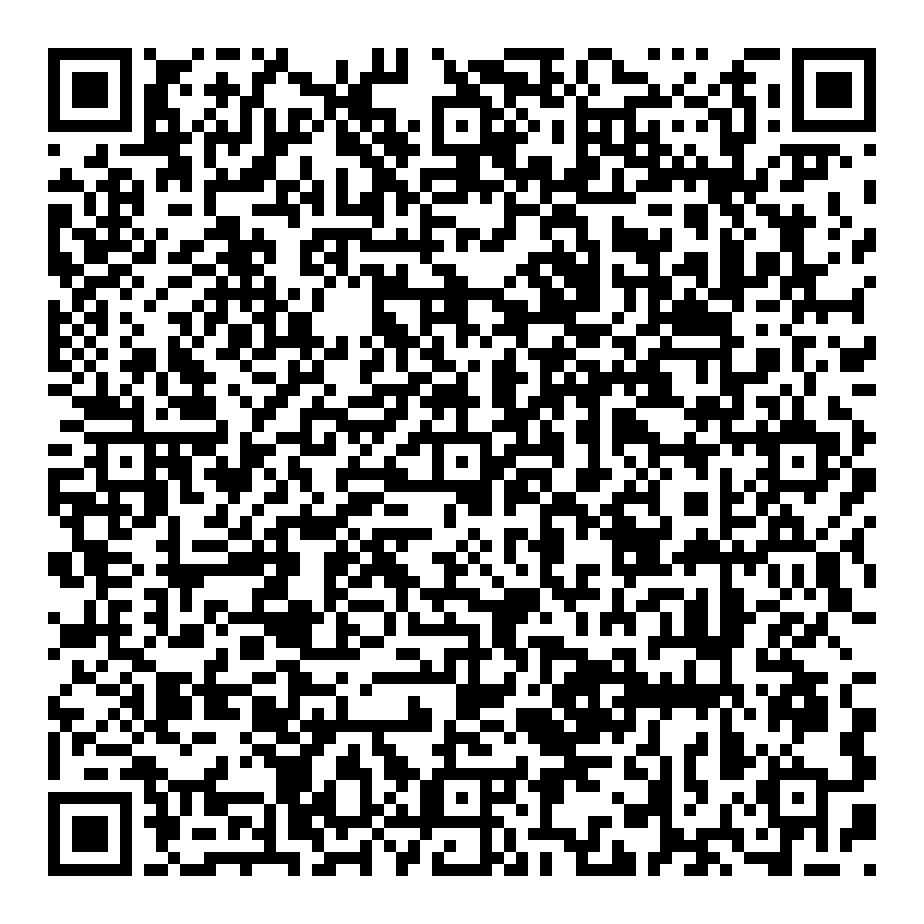
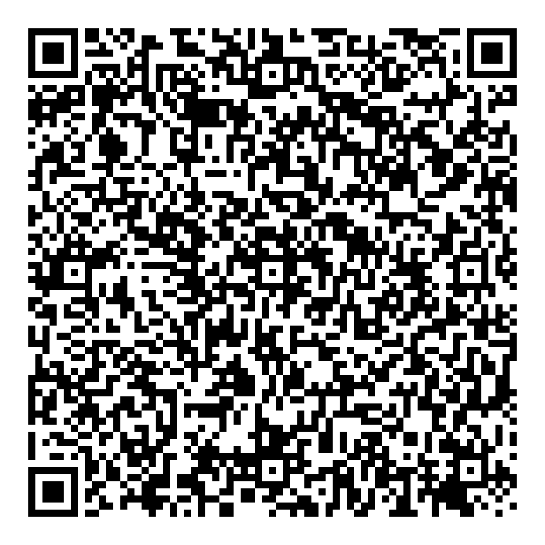
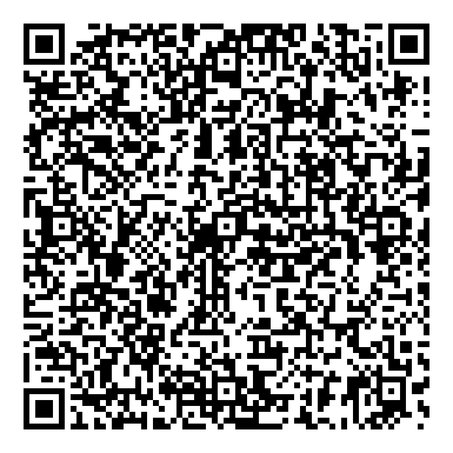
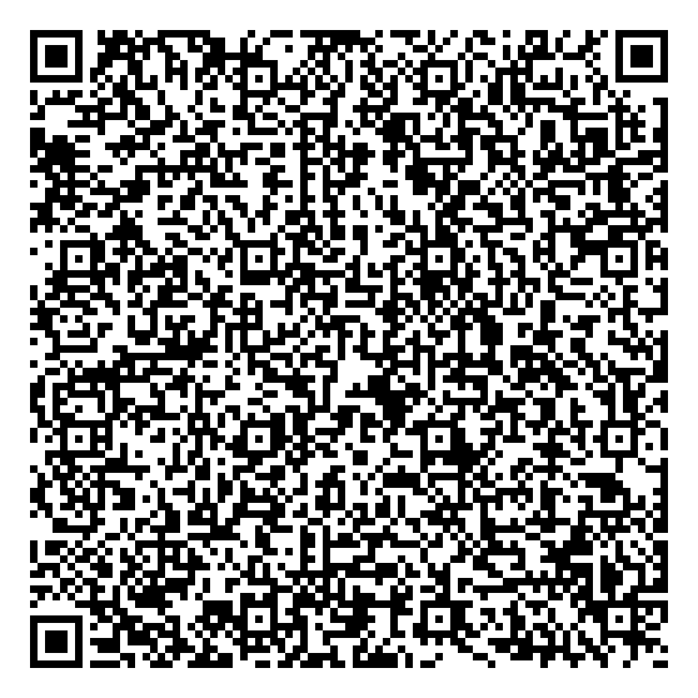
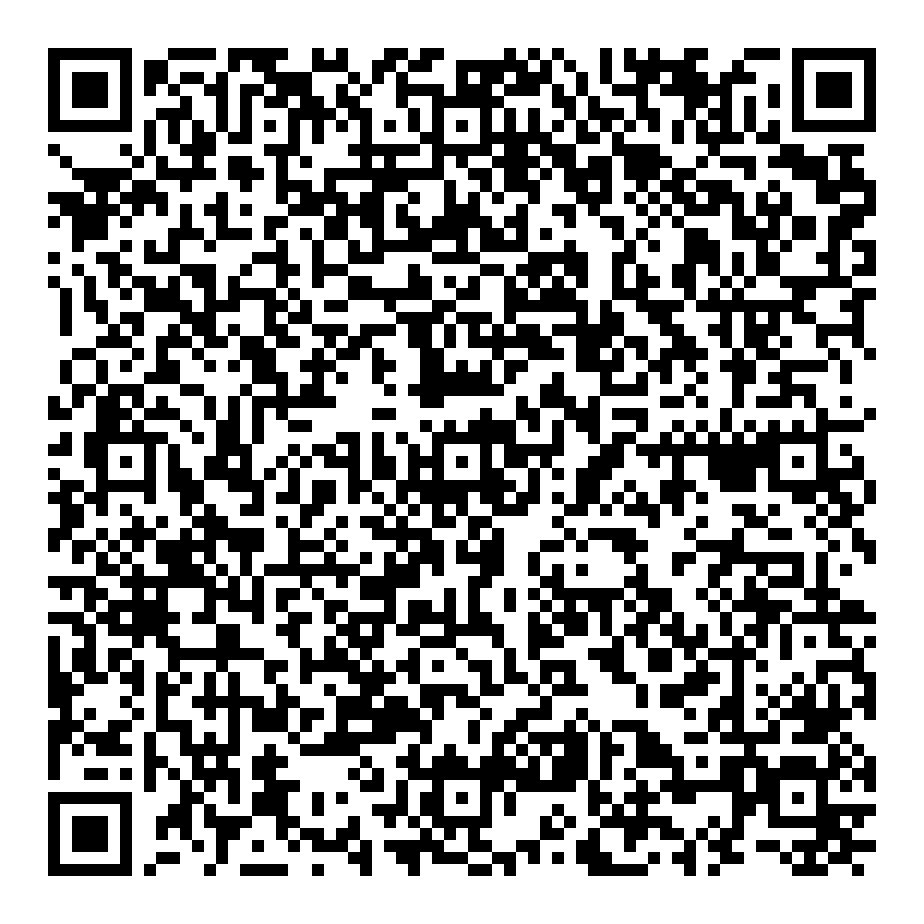

Preview in Sonacella
Best of Wolfgang Amadeus Mozart
A Klassik Radio channel dedicated to the music of Wolfgang Amadeus Mozart.
Copy a station card to add it to Sonacella on Android. You can read the full card text before you copy it.
To use a downloaded collection, open or share its JSON file from your Android file manager with Sonacella.
If copying is blocked, select and copy the card text by hand, or open this page in your browser.
About these QR codes. They contain only station card text, including the stream address. Choose Show QR and scan with Sonacella. The station card opens inside the app. Adding it requires your confirmation.
Mozart, Bach, solo piano, dreamlike classical music and smooth jazz.
Country Christmas songs, festive instrumentals and laid-back holiday radio.
Preview in Sonacella
A Klassik Radio channel dedicated to the music of Wolfgang Amadeus Mozart.
Preview in Sonacella
Ancient, baroque, classical, romantic and contemporary music.
Preview in Sonacella
An online radio station playing Christmas music around the clock, all year long.
Preview in Sonacella
Christmas classics and holiday favorites performed by country artists.
Scan in Sonacella to preview this station. You choose whether to add it.

Save QR imagePreview in Sonacella
Instrumental Christmas music for background listening.
Scan in Sonacella to preview this station. You choose whether to add it.

Save QR imagePreview in Sonacella
Year-round Christmas radio with traditional carols, contemporary hits, country holiday songs, and winter favorites.
Scan in Sonacella to preview this station. You choose whether to add it.

Save QR imagePreview in Sonacella
Quiet Christmas jazz, crooners, orchestras, and strings, streaming around the clock from Stupid Potato.
Stupid Potato allows personal, non-commercial listening. Copying or republishing its original work requires permission. Provider terms
Scan in Sonacella to preview this station. You choose whether to add it.

Save QR imagePreview in Sonacella
An online radio station playing Christmas songs and holiday favorites year-round.
Scan in Sonacella to preview this station. You choose whether to add it.

Save QR imageFor Microsoft Edge
Found a radio station you want to keep? Sonacella Station Cards checks a supported public station page and prepares its stream, artwork and details for review. Export verified cards as JSON or a QR image generated in your browser.
GitHub release · Full installation and update guide · SHA-256 checksum
To update, download and verify the next user ZIP, replace the files in the same installed folder, then choose Reload on the existing extension. Keep the folder after installation. Updates are manual.
Browser extension preview · Installed manually, outside Edge Add-ons · No Windows helper or extension account required
QR scanning requires Sonacella 1.0.9 or later for Android; check Google Play availability. Full catalog import replaces the radio list, so back it up first. Some station websites are unsupported, and a verified sample does not guarantee future availability.